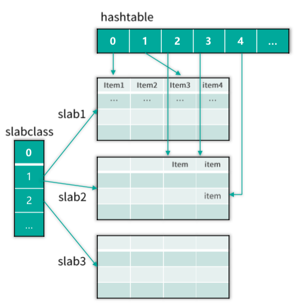
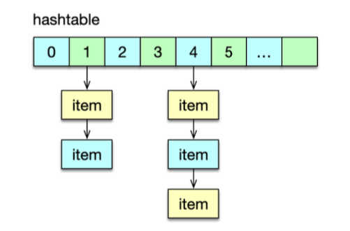
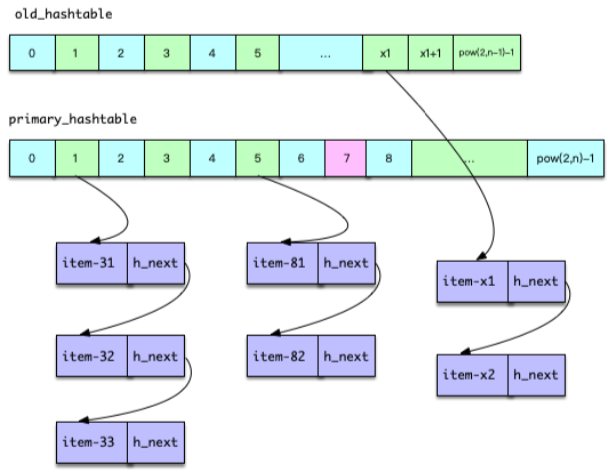

- 00 开篇寄语：缓存，你真的用对了吗？.md
- 01 业务数据访问性能太低怎么办？.md
- 02 如何根据业务来选择缓存模式和组件？.md
- 03 设计缓存架构时需要考量哪些因素？.md
- 04 缓存失效、穿透和雪崩问题怎么处理？.md
- 05 缓存数据不一致和并发竞争怎么处理？.md
- 06 Hot Key和Big Key引发的问题怎么应对？.md
- 07 MC为何是应用最广泛的缓存组件？.md
- 08 MC系统架构是如何布局的？.md
- 09 MC是如何使用多线程和状态机来处理请求命令的？.md
- 10 MC是怎么定位key的.md
- 11 MC如何淘汰冷key和失效key.md
- 12 为何MC能长期维持高性能读写？.md
- 13 如何完整学习MC协议及优化client访问？.md
- 14 大数据时代，MC如何应对新的常见问题？.md
- 15 如何深入理解、应用及扩展 Twemproxy？.md
- 16 常用的缓存组件Redis是如何运行的？.md
- 17 如何理解、选择并使用Redis的核心数据类型？.md
- 18 Redis协议的请求和响应有哪些“套路”可循？.md
- 19 Redis系统架构中各个处理模块是干什么的？.md
- 20 Redis如何处理文件事件和时间事件？.md
- 21 Redis读取请求数据后，如何进行协议解析和处理.md
- 22 怎么认识和应用Redis内部数据结构？.md
- 23 Redis是如何淘汰key的？.md
- 24 Redis崩溃后，如何进行数据恢复的？.md
- 25 Redis是如何处理容易超时的系统调用的？.md
- 26 如何大幅成倍提升Redis处理性能？.md
- 27 Redis是如何进行主从复制的？.md
- 28 如何构建一个高性能、易扩展的Redis集群？.md
- 29 从容应对亿级QPS访问，Redis还缺少什么？.md
- 30 面对海量数据，为什么无法设计出完美的分布式缓存体系？.md
- 31 如何设计足够可靠的分布式缓存体系，以满足大中型移动互联网系统的需要？.md
- 32 一个典型的分布式缓存系统是什么样的？.md
- 33 如何为秒杀系统设计缓存体系？.md
- 34 如何为海量计数场景设计缓存体系？.md
- 35 如何为社交feed场景设计缓存体系？.md
10 MC是怎么定位key的
你好，我是你的缓存课老师陈波，欢迎你进入第 10 课时“Memcached 哈希表”的学习。
我们在进行 Mc 架构剖析时，除了学习 Mc 的系统架构、网络模型、状态机外，还对 Mc 的 slab 分配、Hashtable、LRU 有了简单的了解。本节课，将进一步深入学习这些知识点。
接下来，进入 Memcached 进阶的学习。会讲解 Mc 是如何进行 key 定位，如何淘汰回收过期失效 key 的，还将分析 Mc 的内存管理 slab 机制，以及 Mc 进行数据存储维护的关键机理，最后还会对 Mc 进行完整的协议分析，并以 Java 语言为例，介绍 Mc 常用的 client，以及如何进行调优及改进。
key 定位
哈希表
Mc 将数据存储在 Item 中，然后这些 Item 会被 slabclass 的 4 个 LRU 管理。这些 LRU 都是通过双向链表实现数据记录的。双向链表在进行增加、删除、修改位置时都非常高效，但其获取定位 key 的性能非常低下，只能通过链表遍历来实现。因此，Mc 还通过 Hashtable，也就是哈希表，来记录管理这些 Item，通过对 key 进行哈希计算，从而快速定位和读取这些 key/value 所在的 Item，如下图所示。

哈希表也称散列表，可以通过把 key 映射到哈希表中的一个位置来快速访问记录，定位 key 的时间复杂度只有 O(1)。Mc 的哈希表实际是一个一维指针数组，数组的每个位置称作一个 bucket，即一个桶。性能考虑的需要，Mc 的哈希表的长度设置为 2 的 N 次方。Mc 启动时，默认会构建一个拥有 6.4万 个桶的哈希表，随着新 key 的不断插入，哈希表中的元素超过阀值后，会对哈希表进行扩容，最大可以构建 2 的 32 次方个桶的哈希表，也就是说 Mc 哈希表经过多次扩容后，最多只能有不超过 43亿 个桶。
哈希表设计
对于哈希表设计，有 2 个关键点，一个是哈希算法，一个是哈希冲突解决方案。Mc 使用的哈希算法有 2 种，分别是 Murmur3 Hash 和 Jenkins Hash。Mc 当前版本，默认使用 Murmur3 Hash 算法。不同的 key 通过 Hash 计算，被定位到了相同的桶，这就是哈希冲突。Mc 是通过对每个桶启用一个单向链表，来解决哈希冲突问题的。
定位 key
Memcached 定位 key 时，首先根据 key 采用 Murmur3 或者 Jenkins 算法进行哈希计算，得到一个 32 位的无符号整型输出，存储到变量 hv 中。因为哈希表一般没有 2^32 那么大，所以需要将 key 的哈希值映射到哈希表的范围内。Mc 采用最简单的取模算法作为映射函数，即采用 hv%hashsize 进行计算。由于普通的取模运算比较耗时，所以 Mc 将哈希表的长度设置为 2 的 n 次方，采用位运算进行优化，即采用 hv&hashmask 来计算。hashmask 即 2 的 n 次方 减 1。
定位到 key 所在的桶的位置后，如果是插入一个新数据，则将数据 Item 采用头部插入法插入桶的单向链表中。如果是查找，则轮询对应哈希桶中的那个单向链表，依次比对 key 字符串，key 相同则找到数据 Item。

如果哈希表桶中元素太多，这个链表轮询耗时会比较长，所以在哈希表中元素达到桶数的 1.5 倍之后，Mc 会对哈希表进行 2 倍扩容。由于哈希表最多只有 43 亿左右个桶，所以性能考虑，单个 Mc 节点最多存储 65亿 个 key/value。如果要存更多 key，则需要修改 Mc 源码，将最大哈希，即 HASHPOWER_MAX， 进行调大设置。
哈希表扩容
当 Mc 的哈希表中，Item 数量大于 1.5 倍的哈希桶数量后，Mc 就对哈希表进行扩容处理。如下图所示，Mc 的哈希扩容是通过哈希维护线程进行处理的。准备开始扩容时，哈希维护线程会首先将所有 IO 工作线程和辅助线程进行暂停，其中辅助线程包括 LRU 维护线程、slab 维护线程、LRU 爬虫线程。待这些线程暂停后，哈希维护线程会将当前的主哈希表设为旧哈希表，然后将新的主哈希表扩容之前的 2 倍容量。然后，工作线程及辅助线程继续工作，同时哈希维护线程开始逐步将 Item 元素从旧哈希表迁移到主哈希表。

Mc 在启动时，会根据设置的工作线程数，来构建 一个 Item 锁哈希表，线程越多，构建的锁哈希表越大，对于 4 个线程，锁哈希表有 4096 个桶，对于 10 个线程，锁哈希表会有 8192 个桶，Item 锁哈希表最多有 32k 个桶，1k 是 1024，即最多即 32768 个桶。Mc 的锁哈希表中，每个桶对应一个 Item 锁，所以 Mc 最多只有 32768 个 Item 锁。
Mc 哈希表在读取、变更以及扩容迁移过程中，先将 key hash 定位到 Item 锁哈希表的锁桶，然后对 Item 锁进行加锁，然后再进行实际操作。实际上，除了在哈希表，在其他任何时候，只要涉及到在对 Item 的操作，都会根据 Item 中的 key，进行 Item 哈希锁桶加锁，以避免 Item 被同时读写而产生脏数据。Mc 默认有 4096 个锁桶，所以对 key 加锁时，冲突的概率较小，而且 Mc 全部是内存操作，操作速度很快，即便申请时锁被占用，也会很快被释放。
Mc 哈希表在扩容时，哈希表维护线程，每次按 桶链表纬度 迁移，即一次迁移一个桶里单向链表的所有 Item 元素。在扩容过程中，如果要查找或插入 key，会参照迁移位置选择哈希表。如果 key 对应的哈希桶在迁移位置之前，则到新的主哈希表进行查询或插入，否则到旧哈希表进行查询和插入。待全部扩容迁移完毕，所有的处理就会全部在新的主哈希表进行。
© 2019 - 2023 Liangliang Lee. Powered by gin and hexo-theme-book.